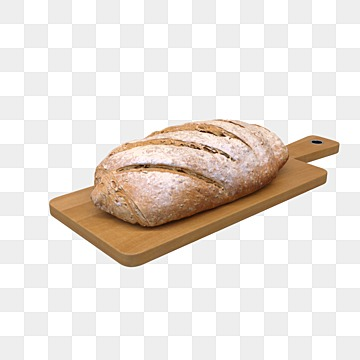

Bread
Home

Description
A recipe for soft and delicious homemade bread.
Makes one loaf of bread -
good for toast and sandwiches.
Ingredients
- 4 cups flour
- 2 cups water
- 1 packet of bread yeast
- 2 tsp salt
Steps
- Preheat oven to 400 degrees Fahrenheit
- Mix dry ingredients in a large bowl
- Pour water in with dry ingredients and mix until it reaches a doughy texture
- Cover lid of bowl with plastic wrap and let dough rise for at least 1 hour
- Transfer dough to a dutch oven
- Place dutch oven in oven for 30 mins with lid on, then take
off lid and let bread cook for 10 more mins
- Remove bread from oven
- Note: when storing bread, wrap it in aluminum foil for freshness